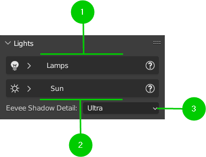

Lights
The light panel was introduced by version of HDRi Maker 3.0.100, and allows to create 2 types of lighting: Solar / Studio Light
Example of basic panel:
{kind=link}
1. Lamps Menu
Lamps allows you to create a set of lights at your own choice on the fly. It will create a Circle with anchored to it the set of lights. It has in addition a target point (See yellow arrow in the image) this allows you to keep the lights pointed where you want. (More you explain how to make the target point parent of the object you want to illuminate in order to be able to point the lights also on objects that move)

The panel looks like this once the lights have been added via the “Add” button:

Add-Reload/Remove (1)
These 2 buttons add or remove the set of lights, the amount of lights depends on the value “Light Count” set. (At the moment only 1 set of lights can be added HDRiMaker 3.0.100)
Light Count (2)
This value (Integer) changes the number of lights connected to the set of lights, the addon will divide the circle evenly.
Note
If you increase the number of lights, these new ones will have the same properties as the last one at the bottom of the list.
Lamps (3)
Lamps changes the position of the set of lights on the X-Y-Z axis.
The button next to it (Link) is to link the set of lights to any object selected in the scene, this is useful to make the set of lights move with the object indicated.
Per rimuovere la parentela, basta cliccare nuovamente sul pulsante “Link” poichè esso stesso è diventato “Unlink”.
To unlink from parent object, just click again on the “Link” button because it has become “Unlink” itself. Take a look in the image below:

Target (4)
Target is the point where the set of lights will be pointed, it is useful to keep the lights pointed at the object you want to illuminate.
The target is an empty object that is created automatically when you add the set of lights, it is anchored to the set of lights.
Like a Lamps, the button next to it (Link) is to link the target to any object selected in the scene, this is useful to make the target move with the object indicated in order to keep the lights pointed at the object you want to illuminate when it moves.
Light Type / Area Shape (5)
- Light type allows you to choose between many types of lights:
Area: Enum into next property (Square, Disc, Rectangle, Ellipse)
Spot
Point
Depending on the type of light chosen, the panel below with the properties of the lights will change.
Note
Area type have a property called “Area Shape” that allows you to choose between 4 different shapes: (Square, Disc, Rectangle, Ellipse)
Lights Properties (6)
This panel allows you to modify the values of the properties of each single light or all the lights together.

Energy Columns: This column allows you to change the energy of each light individually.
Color Button: Open A Colorlab in order to get a colors palette (The color chosen will be applied to all the lights)
Color Columns: (Under Color Button): This column allows you to change the color of each light individually.
Random Color: This button allows you to randomize the color of the lights.
Size Columns: This column allows you to change the size of each light individually.
Note
You can change the slider values all together simply by passing the mouse with the left button pressed this will allow you to change all the values at once.
- Colorlab Light preset:
. Colorlab is a tool present in our addons, it allows you to search and apply colors quickly and easily.

3. Eevee Shadow Detail
This is a selector of Eevee shadow detail level. I compiled in it some presets that automatically modify the settings of the Eevee shadow detail level (Only works with Eevee)
Enum In (Very Low, Low, Default, High, Very High, Ultra)
The level of detail greatly affects the performance of Eevee, so it is necessary to choose carefully the level of detail, it can be changed at any time.